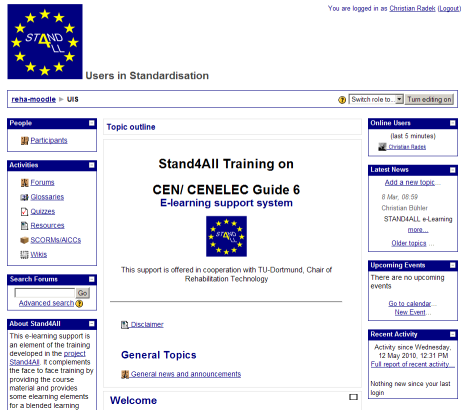

E-Learning Inhalt und Ausstattung
Der Kurs “Users in Standardisation”, der im Rahmen des Stand4All Projektes für die Schulungen entwickelt worden ist, wurde in ein Lernmanagementsystem bzw. ein Kursmanagementsystem integriert. Das heißt, dass der Inhalt der Präsentationen und der sonstigen begleitenden Dokumente in einer web-basierten Form verfügbar sind, die von den Studenten bei freier Zeiteinteilung durchgearbeitet werden können, zum Beispiel vor oder nach einer realen Unterrichtseinheit. Die einzigen Voraussetzungen bestehen aus einem Webbrowser und einem PDF Reader. Der Inhalt des E-Learning Kursmoduls deckt dabei nicht alle Unterrichtseinheiten der Stand4All Schulung ab, da sich Gruppendiskussionen und Rollenspiele nicht für das individuelle Lernen eignen.
Stand4All verwendet eine asynchrone E-Learning Methode: Studenten und Dozenten müssen dabei nicht gleichzeitig in der Lernumgebung anwesend sein. Die Lernumgebung erlaubt es den Studenten sogar untereinander und mit den Dozenten zu kommunizieren. Damit stellt die Moodle Lernumgebung eine Kommunikationsplattform für ein Trainee Netzwerk dar. Dieses Netzwerk sorgt dafür, dass sich Trainees bereits vor der ersten realen Unterrichtseinheit kennen gelernt haben. Das E-Learning Kursmodul wurde nicht als isolierte, sondern für eine gemischte (E-Learning und reale Unterrichtsanteile) Lernumgebung entwickelt.
Zugriff auf das E-Learning Modul
Der Lerninhalt ist als E-Learning Modul in Moodle (siehe unten) umgesetzt worden. Das Kursmodul richtet sich an Organisationen, die Menschen mit Behinderungen und/oder im Alter vertreten und an Mitglieder von Normungskomitees, die das Thema Barrierefreiheit in Normen und technischen Spezifikationen berücksichtigt wissen wollen. Das Unterrichtsmaterial steht auch nationalen Normungsinstituten zur Verfügung. Nutzerorganisationen und Normungsinstitute, die das Kursmaterial verwenden wollen, wenden sich bitte an die Stand4All Projektkoordinatorin Frau Charlotte Mosies (NEN, das niederländische Normungsinstitut) unter: charlotte.mosies@nen.nl.
Was ist E-Learning?
Wikipedia definiert E-Learning als “alle Formen von Lernen, bei denen elektronische oder digitale Medien für die Präsentation und Distribution von Lernmaterialien und/oder zur Unterstützung zwischenmenschlicher Kommunikation zum Einsatz kommen. Für E-Learning finden sich als Synonyme auch Begriffe wie: Online-Lernen, Telelernen, multimediales Lernen, computergestütztes Lernen, Computer-based Training, Open- und Distance-Learning u. a.”
E-Learning verwendet häufig eine Lernplattform LMS. Wikipedia definiert eine Lernplattform als “Eine Lernplattform bzw. Learning Management System (LMS) ist ein komplexes Softwaresystem, das der Bereitstellung von Lerninhalten und der Organisation von Lernvorgängen dient. Eine wichtige Aufgabe einer web-basierten Lernumgebung ist außerdem die Kommunikation zwischen Lernenden und Lehrenden zu ermöglichen. Folglich symbolisiert diese eine Schnittstelle zwischen Bildungsanbieter und lernender Person. Nicht dazu gehören bloße Bildungsinhalte, die über das Internet angeboten werden wie normale Webpräsenzen oder -portale. Vorteil eines LMS ist somit die Entlastung am Lernbetrieb, die Regelung des Informationsflusses, Vereinfachung des Lernens und Übernahme zahlreicher Verwaltungsaufgaben.”
Was ist Moodle?
Moodle ist ein kostenloses objektbasiertes Kursmanagementsystem, eine Lernplattform auf Open-Source-Basis, die den Bereich von der Grundschule bis hin zur Hochschulausbildung abdeckt. Moodle kann sowohl für reine Online Kurse als auch als Ergänzung zu Präsenzkursen eingesetzt werden. Außerdem unterstützt Moodle Gruppenarbeit durch Aktivitätsmodule für Foren und Wikis. Kursinhalte können als SCORM/ AICC Module angeboten werden. SCORM (Sharable Content Object Reference Model) besteht aus einer Anzahl von Spezifikationen, die Kompatibilität, Zugänglichkeit und Wiederverwendbarkeit von web-basierten Lerninhalten sicherstellen. Lerninhalte, die die SCORM Spezifikation erfüllen, lassen sich leicht auf andere Lernplattformen übertragen, die dieselbe SCORM Version unterstützen.
Im Zeitraum vom 3. - 6.12.2007 führten Mitarbeiter des AbI-Projekts eine Untersuchung der Lernplattform Moodle in der Version 1.8.3 durch. Als Ergebnis kann festgehalten werden, dass Moodle in weiten Teilen barrierefrei ist, es aber dennoch Verbesserungsbedarf gibt.